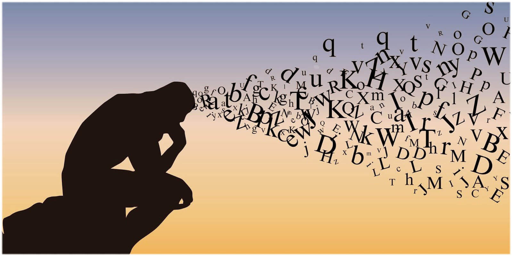

Secondo l’Enciclopedia Treccani, per disciplina si intende “l’atto dell’apprendere, e di riflesso l’atto dell’insegnare”;
di conseguenza, indica qualsiasi settore delle conoscenze umane organizzato in modo da facilitarne l'insegnamento e l'apprendimento
in ambito didattico. Tali denominazioni sono comunemente utilizzate nel contesto scolastico. Inoltre, il termine "disciplina"
passò a significare anche l'oggetto stesso dell’apprendere e dell’insegnare, cioè la materia dell'insegnamento, da cui derivano le varie discipline:
letterarie, scientifiche, storiche, ecc.

FILOSOFIA:
In ambito filosofico, la disciplina (dal latino disciplina, da disciplinare, ovvero "insegnare" o "educare")
si riferisce a un campo di studio specifico, come la metafisica, la logica, l'etica o la gnoseologia. In questo contesto,
una disciplina rappresenta un'area di conoscenza organizzata, studiata e approfondita attraverso un metodo specifico,
con l'obiettivo di comprendere aspetti fondamentali della realtà.
SPORT:
Nello sport, la disciplina è spesso intesa come l’arte di fare ciò che non si vuole fare come se lo si amasse.
Essa rappresenta la capacità dell’individuo di seguire norme, regole o comportamenti, indipendentemente dalle condizioni personali
o ambientali, e di mantenerli costantemente nel tempo. La disciplina sportiva comprende un insieme di regole, principi e atteggiamenti
che promuovono il rispetto del regolamento, dei compagni di squadra, degli avversari e degli allenatori.
Favorisce la coerenza nell'allenamento e nel comportamento e contribuisce alla crescita personale e sportiva dell'atleta.